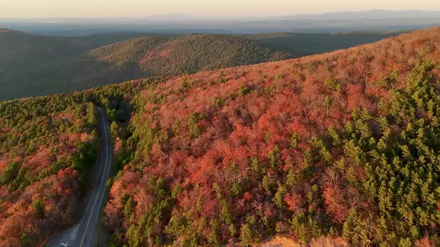

Oklahoma, Arkansas & the Plains
12 films and shorts from places named in the titles.
- Talimena Scenic BywayOklahoma and Arkansas
- Mount ScottOklahoma
- World’s Largest Leg LampChickasha, Oklahoma
- Fort SmithArkansas
- RogersArkansas
- Eureka SpringsArkansas
- War Eagle MillArkansas
- Bella VistaArkansas
- CarhengeAlliance, Nebraska
- Devils TowerWyoming
Where we ate
- Calico CountyFort Smith, Arkansas